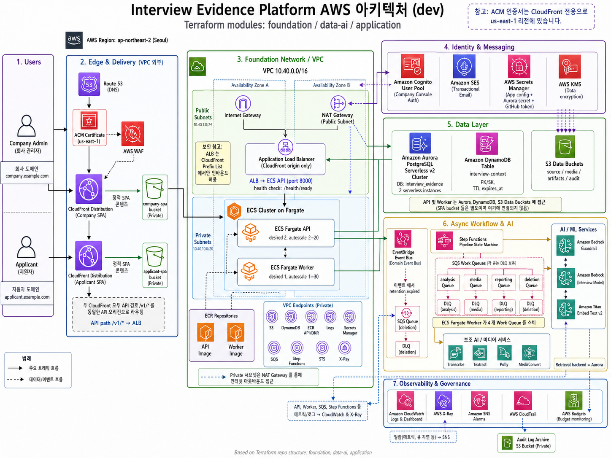

Contents WhyYouRAG 기반 AI 구조화 면접
Document Map
개발 기획서 구성
구현 세부 목록보다 문제, 핵심 기능, RAG 질문 흐름, 주요 기술 선택을 중심으로 정리했습니다.
- 01서비스 개요핵심 가치, 사용자, 서비스 여정과 범위p.3
- 02문제 정의와 타깃왜 면접인가, 왜 지금인가, 왜 IT 직군인가p.4
- 03핵심 제품 설계RAG 기반 질문 생성과 답변 근거 리포트p.5
- 04AWS 아키텍처전체 구성과 주요 설계 원칙p.6
- 05기술 스택주요 프레임워크와 클라우드 구성p.7
- 06RAG 검색 설계의미 검색과 키워드 검색을 나눈 이유p.8
- 07신뢰성과 보안복구, 격리, 동의, 삭제, 사람의 최종 판단p.9
- 08기대효과기업과 지원자에게 제공하는 가치p.10
WhyYou Project Report2
01 서비스 개요WhyYou
01서비스 개요
WhyYou는 기업의 평가 기준과 지원자의 제출 자료를 연결하는
RAG 기반 AI 구조화 면접 플랫폼입니다.
개인 맞춤형 질문으로 경험의 깊이를 확인하고, 실제 답변을 채용 검토 근거로 남깁니다.
핵심 가치
- 기업 기준 중심질문과 리포트는 기업이 정한 직무 역량과 평가 기준에서 출발합니다.
- 지원자 자료 기반 질문이력서·포트폴리오·공개 코드를 검색해 개인 맞춤형 질문과 꼬리질문을 생성합니다.
- 실제 답변 중심 근거제출 자료는 질문의 배경이며, 평가는 지원자가 면접에서 직접 답한 내용에 연결됩니다.
- 검토 가능한 결과질문·답변·자막·영상 구간과 판단 이유를 한 화면에서 확인합니다.
- 사람의 최종 판단AI는 면접과 정리를 돕고, 최종 채용 결정은 기업 담당자가 수행합니다.
사용자
포지션과 평가 기준을 설정하고 지원자를 초대합니다. 면접 후에는 답변 근거와 리포트를 검토하고 최종 상태를 직접 기록합니다.
개인 링크로 접속해 자료를 제출하고 AI 면접에 참여합니다. 본인의 경험과 문제 해결 과정을 질문에 따라 직접 설명합니다.
서비스 여정
범위
| 대상 | 한국어 기반 IT·개발 직군 채용 |
| 분석 자료 | 이력서, 자기소개서, PDF 포트폴리오, 공개 코드 저장소 |
| 핵심 경험 | 자료 분석 → 실시간 AI 면접 → 근거 기반 리포트 → 사람 검토 |
| 제외 범위 | 비IT 직군, 다국어, 비공개 저장소 인증, 자동 합격·불합격 결정 |
01 서비스 개요3
02 문제 정의와 타깃WhyYou
02문제 정의와 타깃
사람을 파악하는 데 면접만큼 직접적인 방법은 없습니다.
하지만 모든 지원자를 사람이 직접 면접하기에는 너무 많은 시간과 비용이 듭니다.
WhyYou는 이 검증의 깊이와 운영 비용 사이의 간극을 해결합니다.
왜 지금 필요한가
생성형 AI로 이력서, 포트폴리오, 코드 작성의 진입 장벽이 낮아지면서
산출물의 완성도만으로 실제 역량을 판단하기 어려워졌습니다.
기업은 더 많은 자료를 받지만, 그 경험을 지원자가 실제로 이해하고 주도했는지는
결국 질문하고 되물어야 확인할 수 있습니다.
서류 검토의 한계
잘 정리된 문서가 실제 이해도와 본인 기여를 보장하지 않습니다.
사람 면접의 비용
시니어 실무자의 일정과 검토 시간이 반복적인 사전 면접에 소모됩니다.
평가의 불일치
면접관마다 질문의 깊이와 기록 방식이 달라 비교 가능한 근거가 부족합니다.
기존 대안만으로 부족한 이유
| 대안 | 한계 |
|---|
| 코딩 테스트 | 정답과 구현 능력은 확인할 수 있지만, 실제 프로젝트에서 내린 선택과 협업·운영 경험까지 설명하기 어렵습니다. |
| 과제형 전형 | 깊은 검증이 가능하지만 지원자와 평가자 모두에게 시간이 많이 들고, 생성형 AI 활용 범위를 분리하기 어렵습니다. |
| 서류 요약 AI | 문서를 더 빠르게 읽어줄 뿐, 지원자가 그 내용을 실제로 이해하는지 되물을 수 없습니다. |
| 고정 질문 면접 | 비교는 쉽지만 지원자의 실제 경험을 파고드는 질문과 꼬리질문이 부족합니다. |
왜 IT·개발 직군인가
검증할 산출물
코드, 설계 문서, 운영 기록처럼 RAG가 검색할 수 있는 실무 자료가 존재합니다.
깊이 있는 질문
기술 선택, 트레이드오프, 장애 대응, 본인 기여를 구체적으로 되물을 수 있습니다.
높은 면접 비용
시니어 개발자의 반복 사전 면접 시간을 줄일 때 기업이 얻는 가치가 큽니다.
RAG 기반 개인 맞춤형 질문
개인화는 평가 기준을 바꾸는 것이 아니라, 같은 평가축을 어떤 경험으로 깊게 확인할지를 정하는 방식입니다.
예시 · 장애 대응 역량
이력서에 Kafka 장애 대응 경험이 있다면 해당 자료를 근거로 원인 추적과 복구 판단을 묻고, 답변이 모호하면 당시 지표·대안·본인 역할을 꼬리질문으로 확인합니다. 다른 지원자는 배포 장애 사례로 질문하더라도 평가 기준은 동일합니다.
02 문제 정의와 타깃4
03 핵심 제품 설계WhyYou
03핵심 제품 설계
WhyYou의 핵심은 지원자 자료를 점수화하는 것이 아니라, 기업 기준에 맞는 질문을 만들고 실제 답변에서 검토 가능한 근거를 찾는 것입니다.
RAG 면접 흐름
RETRIEVE
관련 근거 검색
의미+키워드 검색
핵심 기능
1. 기업 평가 기준 설계
직무 요건, 관찰할 역량, 공통 질문과 금지 주제를 면접 기준으로 설정합니다.
2. 제출 자료 분석
경험, 기술 선택, 성과, 충돌, 본인 기여가 불명확한 지점을 검증 포인트로 정리합니다.
3. 실시간 AI 면접
한 번에 하나의 질문을 제시하고, 답변 내용에 따라 같은 평가축 안에서 꼬리질문을 생성합니다.
4. 근거 기반 리포트
평가 항목마다 실제 답변, 자막, 영상 구간, 판단 이유와 추가 확인 질문을 연결합니다.
질문의 근거와 평가의 근거를 분리
| 구분 | 역할 | 사용 방식 |
|---|
| 질문의 근거 | 이력서·포트폴리오·코드의 관련 구간 | 왜 이 질문을 했는지 설명하며, 그 자체로 역량 평가가 되지는 않습니다. |
| 평가의 근거 | 지원자의 최종 답변과 연결된 자막·영상 구간 | 관찰 내용과 판단 이유를 뒷받침하며, 검토자가 원본 구간을 다시 확인합니다. |
기업이 받는 결과
- 평가 항목별 확인 상태확인됨, 부분 확인, 근거 부족, 추가 확인 필요
- 답변 타임라인질문·답변·자막·영상의 같은 시점 연결
- 불확실성 표시AI가 확인하지 못한 내용을 명확하게 분리
- 후속 면접 질문사람 면접에서 추가로 검증할 항목 제안
03 핵심 제품 설계5
04 AWS 아키텍처WhyYou
04AWS 아키텍처
실시간 면접과 시간이 오래 걸리는 분석 작업을 분리하고, 데이터 성격에 맞는 저장소를 사용합니다.

WhyYou AWS 기반 전체 구성
화면 분리
기업 콘솔과 지원자 면접룸을 별도 React 앱으로 구성해 인증과 사용 흐름을 단순화합니다.
실시간·비동기 분리
면접은 WebSocket, 자료 분석과 리포트 생성은 큐 기반 워커로 처리합니다.
데이터 역할 분리
Aurora는 세션·Turn·체크포인트의 영구 원본입니다. DynamoDB는 복구 속도를 위한 재구성 가능한 최근 상태 Hot View이며, 운영 로그와 지표는 CloudWatch에 남깁니다.
관리형 AI
Bedrock, Transcribe, Polly, Textract를 사용해 팀은 질문 품질과 근거 연결에 집중합니다.
04 AWS 아키텍처6
05 기술 스택WhyYou
05기술 스택
핵심 흐름을 빠르게 구현하되, 실시간 면접·RAG 검색·근거 리포트가 서로 독립적으로 확장될 수 있는 구성을 선택했습니다.

React
기업 콘솔과 지원자 면접룸의 인터랙티브 UI

TypeScript
프론트엔드 계약과 상태 흐름의 타입 안정성

Python 3.12
AI·분석 워커와 백엔드 비즈니스 로직

FastAPI
REST API와 실시간 WebSocket 엔드포인트
AWSAmazon Bedrock
RAG 질문, 꼬리질문, 요약과 리포트 생성

Aurora PostgreSQL
업무 데이터와 pgvector·전문검색을 한곳에서 관리

ECS Fargate
API와 워커 컨테이너를 독립적으로 실행·확장

Terraform
AWS 인프라와 보안 설정을 코드로 재현
주요 선택 이유
| 모듈형 모놀리스 | 초기 운영 복잡도를 낮추면서 기업 관리, 자료 분석, 면접, 리포트의 코드 경계를 유지합니다. |
| Aurora 기반 검색 | 업무 데이터와 검색 데이터의 기업 범위를 같은 SQL 조건으로 강제해 격리 누락 위험을 줄입니다. |
| 관리형 AI 서비스 | GPU와 모델 서버 운영 대신 기업 기준·지원자 자료·질문 정책을 연결하는 제품 로직에 집중합니다. |
| 컨테이너·IaC | 로컬과 운영의 실행 방식을 맞추고, 배포 환경을 반복 가능하게 구성합니다. |
추가 AWS 구성
음성·문서
Transcribe · Polly · Textract
저장·메시징
S3 · DynamoDB · SQS
운영·보안
CloudWatch · KMS · Secrets Manager
05 기술 스택7
06 RAG 검색 설계WhyYou
06RAG 검색 설계
의미 검색과 키워드 검색을 나눈 이유는 두 방식이 서로 다른 실패를 하기 때문입니다. WhyYou는 두 결과를 결합해 질문에 필요한 자료를 찾습니다.
의미 검색 · pgvector
표현이 달라도 의미가 같은 경험을 찾습니다. 기업 기준의 “장애 대응”과 지원자 자료의 “인시던트 회고”처럼 단어가 겹치지 않는 문장을 연결합니다.
+
키워드 검색 · PostgreSQL FTS
기술명, 라이브러리, 함수, 오류 코드처럼 정확한 문자열을 찾습니다. Kafka와 Kinesis처럼 의미가 비슷하지만 구분해야 하는 항목에 필요합니다.
의미가 가까운 자료 + 정확히 일치하는 자료 + 기업·지원자 범위 = 질문에 사용할 근거
왜 한 가지 검색만 쓰지 않는가
| 한 가지만 사용 | 발생하는 문제 | 보완 방식 |
|---|
| 의미 검색만 사용 | 비슷한 기술이나 개념을 혼동하고 정확한 식별자를 놓칠 수 있습니다. | 키워드·심볼 일치 결과를 함께 반영합니다. |
| 키워드 검색만 사용 | 같은 경험을 다른 표현으로 작성하면 관련 자료를 찾지 못합니다. | 임베딩 유사도로 의미가 가까운 구간을 찾습니다. |
질문 생성 원칙
- 평가 기준은 고정RAG 결과가 새로운 평가축을 만들거나 기업 기준을 변경하지 않습니다.
- 검색 결과는 질문 재료자료에서 발견한 주장은 사실로 단정하지 않고 지원자에게 확인합니다.
- 출처를 함께 저장질문에 사용한 문서·코드 위치와 검색 버전을 남겨 질문 이유를 설명합니다.
- 검색 실패 시 안전하게 진행자료를 꾸며내지 않고 공통 평가 기준과 최근 답변만으로 면접을 이어갑니다.
꼬리질문 생성
첫 답변에서 역할, 판단 근거, 대안, 결과가 충분하지 않으면 같은 평가 기준 안에서 하나의 짧은 질문을 추가합니다. 질문의 목적은 답을 유도하는 것이 아니라 지원자의 이해도와 실제 기여 범위를 명확히 확인하는 것입니다.
06 RAG 검색 설계8
07 신뢰성과 보안WhyYou
07신뢰성과 보안
채용 면접은 다시 만들기 어려운 기록입니다. 기술 장애가 지원자 평가로 이어지지 않고, 기업과 지원자의 데이터가 섞이지 않도록 제품 규칙과 저장 구조를 함께 설계했습니다.
동의 후 처리
유효한 동의가 없으면 자료 분석, 녹화, AI 평가를 시작하지 않습니다.
기업별 데이터 격리
API, 검색, 파일, 작업 메시지마다 기업 범위를 확인합니다.
중단 후 재개
마지막 확정 답변과 녹화 지점부터 중복 질문 없이 면접을 이어갑니다.
기술 장애와 평가 분리
네트워크·음성 인식 문제는 역량 근거가 아닌 진행 이벤트로 기록합니다.
근거 없는 평가 차단
실제 답변과 연결되지 않은 항목은 확인됨으로 저장하지 않습니다.
사람의 최종 판단
AI와 자동 작업은 합격·불합격 등 최종 채용 상태를 변경할 수 없습니다.
검증되는 삭제
원본과 파생 자료를 저장소별로 삭제하고 실제 부재까지 확인합니다.
민감 정보 로그 제외
지원자 원문, 답변, 자격 증명, 토큰과 임시 URL을 운영 로그에 남기지 않습니다.
복구 가능한 면접 상태
제한 모드
| 검색 실패 | 지원자 자료를 지어내지 않고 공통 평가 기준과 최근 답변으로 진행합니다. |
| 음성 합성 실패 | 질문을 텍스트로 표시해 면접을 계속합니다. |
| 연결 중단 | 확정된 답변과 업로드된 녹화 조각을 기준으로 안전한 지점부터 재개합니다. |
| 자료 일부 실패 | 성공한 자료와 공통 기준으로 진행하고, 실패 영향 범위를 리포트에 표시합니다. |
07 신뢰성과 보안9
08 기대효과WhyYou
08기대효과
WhyYou는 사람 면접을 없애는 서비스가 아니라, 사람이 더 적은 시간으로 더 많은 지원자를 깊이 검토하도록 돕는 서비스입니다.
RAG지원자 경험에 맞는 질문
Live답변에 따른 꼬리질문
Evidence영상·자막 기반 근거
Human사람의 최종 채용 판단
기업에게
반복적인 서류 검토와 사전 면접 부담을 줄이고, 실무자 시간을 유력 지원자의 심층 검토에 집중합니다.
지원자에게
문서만으로 전달하기 어려운 문제 해결 과정과 실제 기여를 본인의 언어로 설명할 기회를 제공합니다.
채용 과정에
기억과 인상 중심의 기록을 질문·답변·영상 근거가 연결된 일관된 검토 방식으로 바꿉니다.
기존 방식과의 차이
| 기존 방식 | WhyYou |
|---|
| 서류 중심 선별 | 서류의 주장을 면접 질문으로 바꾸고 실제 이해도를 확인합니다. |
| 고정 질문 녹화 면접 | 지원자 자료와 직전 답변에 따라 개인 맞춤형 꼬리질문을 생성합니다. |
| 전체 영상 재시청 | 평가 항목에서 관련 답변과 영상 시점으로 바로 이동합니다. |
| 면접관의 메모 의존 | 관찰 내용, 판단 이유, 자막·영상 구간을 함께 보존합니다. |
| AI 자동 판단 | AI는 근거를 정리하고 최종 판단은 사람이 수행합니다. |
프로젝트의 한 문장
WhyYou는 “왜 이 지원자를 더 만나야 하는가?”에 답할 수 있도록,
지원자의 실제 답변을 채용 판단의 근거로 만드는 플랫폼입니다.
팀 WhyYou
08 기대효과10